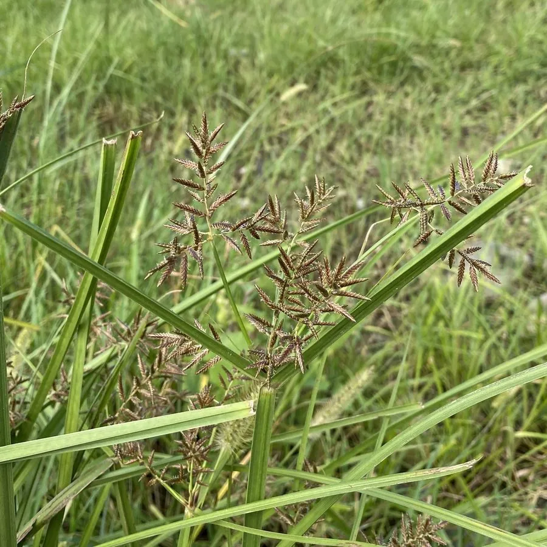

水生植物 · 植物界
水莎草 Cyperus serotinus

莎草科莎草属多年生草本，具长根状茎，花序复出、小穗多数，生于水田与浅水湿地，是常见的湿生杂草。
- 分类
- 门被子植物门纲木兰纲目禾本目科莎草科属莎草属
- 栖息环境
- 水田、浅水湿地与河岸，喜湿润或浅水环境
- 地理分布
- 中国、日本、朝鲜及东南亚；中国南北各地常见
- 保护级别
- IUCN 暂无评估；分布广，种群稳定
物种志
水莎草为多年生草本，高 30–80 厘米，具长而横走的根状茎，茎三棱形、丛生。叶片线形，长 20–50 厘米，宽 3–6 毫米，生于茎基部。花序为复伞形，顶生，具多个伞梗，小穗线形、多数，密集成穗状；果实为小坚果，三棱形。
本种分布于中国、日本、朝鲜及东南亚，生于水田、浅水湿地与河岸，是稻田中常见的湿生杂草。它根状茎发达、繁殖迅速，在稻田中难以根除，常与水稻争夺养分。水莎草的茎叶可作饲料，根状茎可入药，有行气活血之效。它对水分变化适应力强，既耐浅水也耐湿生，是人工湿地中常见的自生植物。在水稻田边，它常成片出现，是农民熟悉的“水草”之一。
形态与习性
- 株高30–80 厘米，茎三棱形
- 叶线形，长 20–50 厘米
- 花期6–9 月，复伞形花序
- 光照喜光，也耐半阴
- 水分喜浅水或湿润土壤
- 土壤水稻土或富含腐殖质的塘泥
- 主要用途湿地绿化、饲料与根状茎入药
趣味知识
- 水莎草的茎横切面呈三角形，这是莎草科植物的典型特征。
- 它的根状茎横走且繁殖迅速，是稻田中最难根除的杂草之一。
- 水莎草的花序为复伞形，小穗细长密集，像一把把小麦穗。
- 它的茎叶可作饲料，根状茎在民间入药，有行气活血之效。